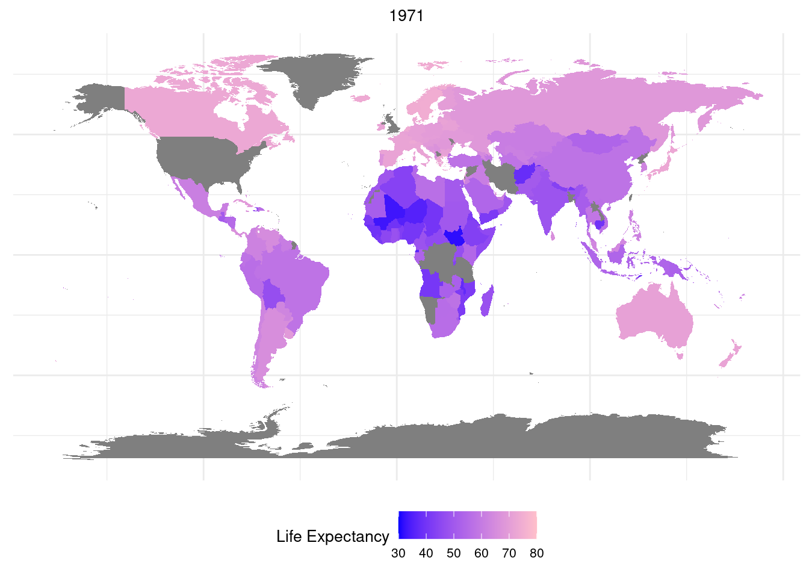
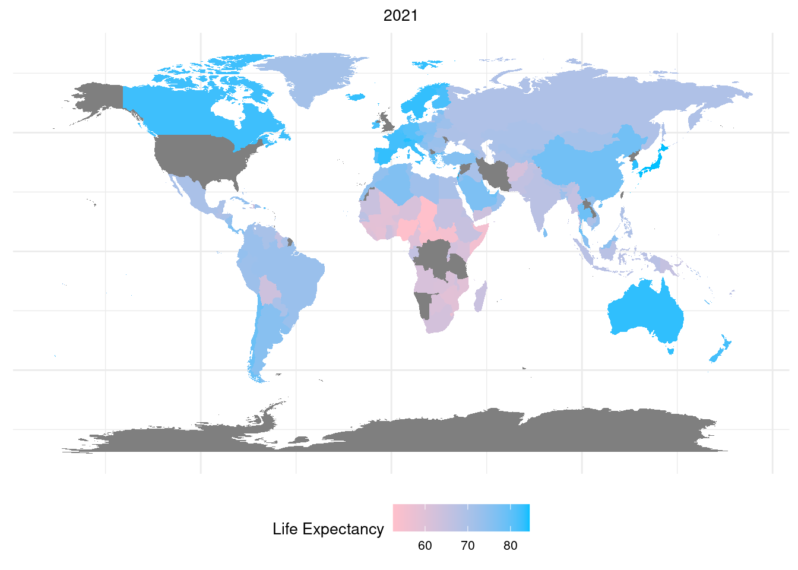
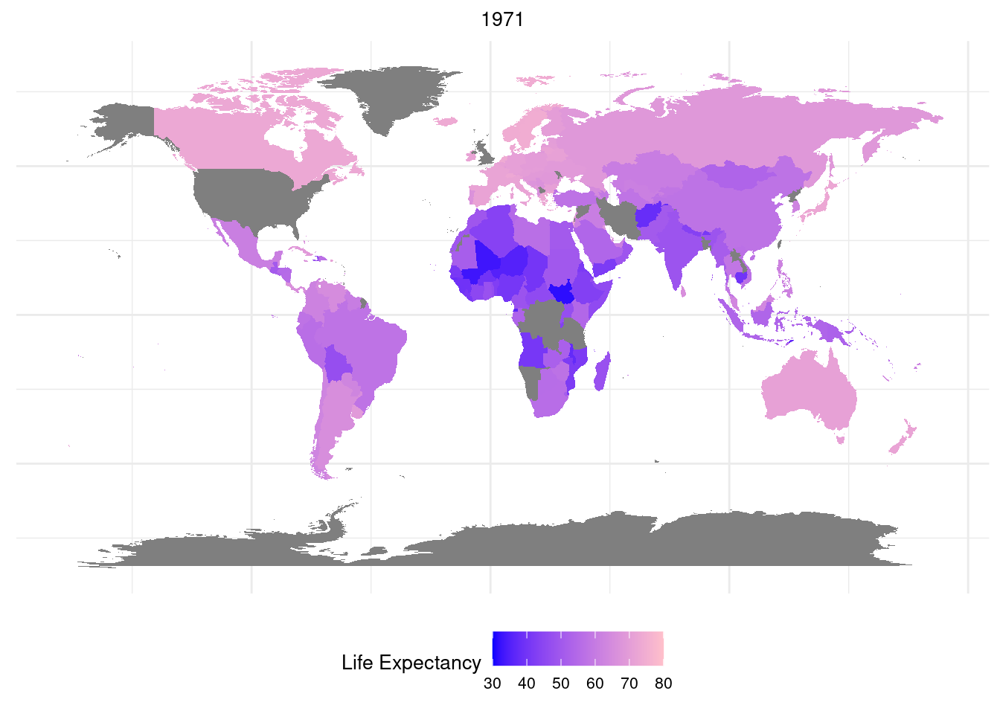
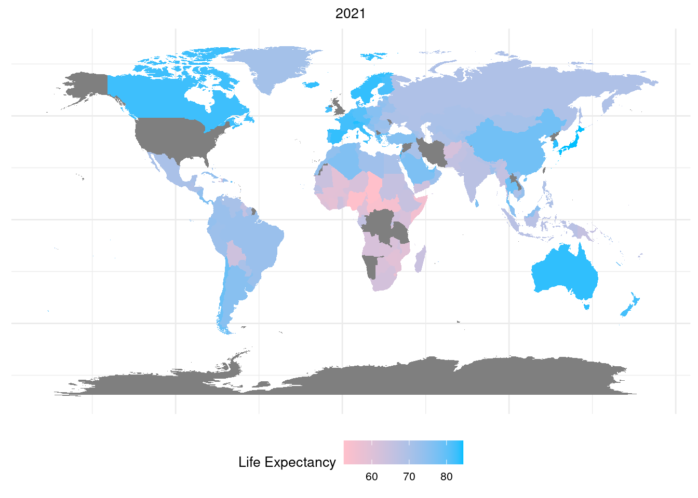
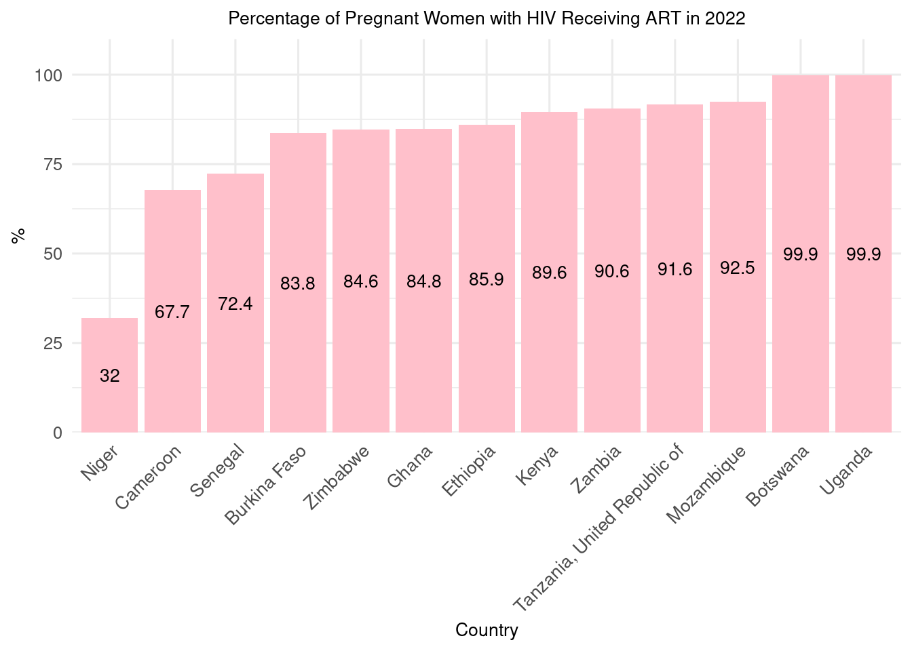
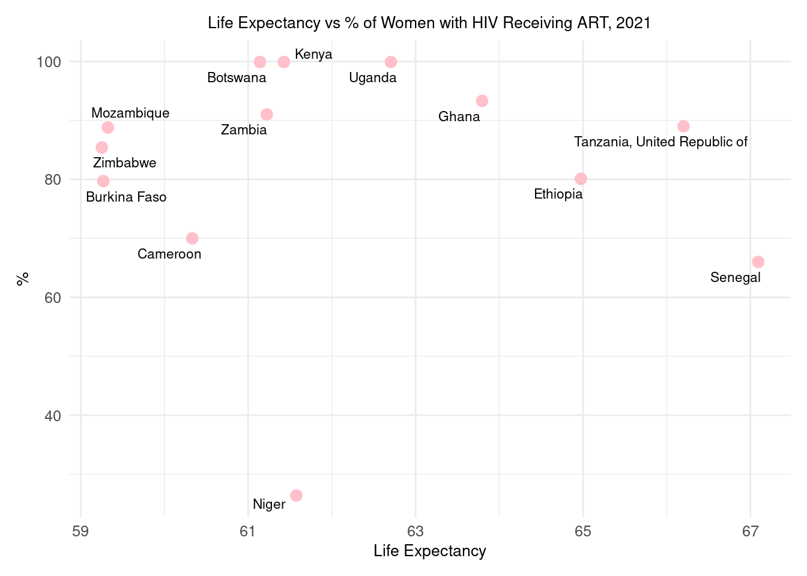
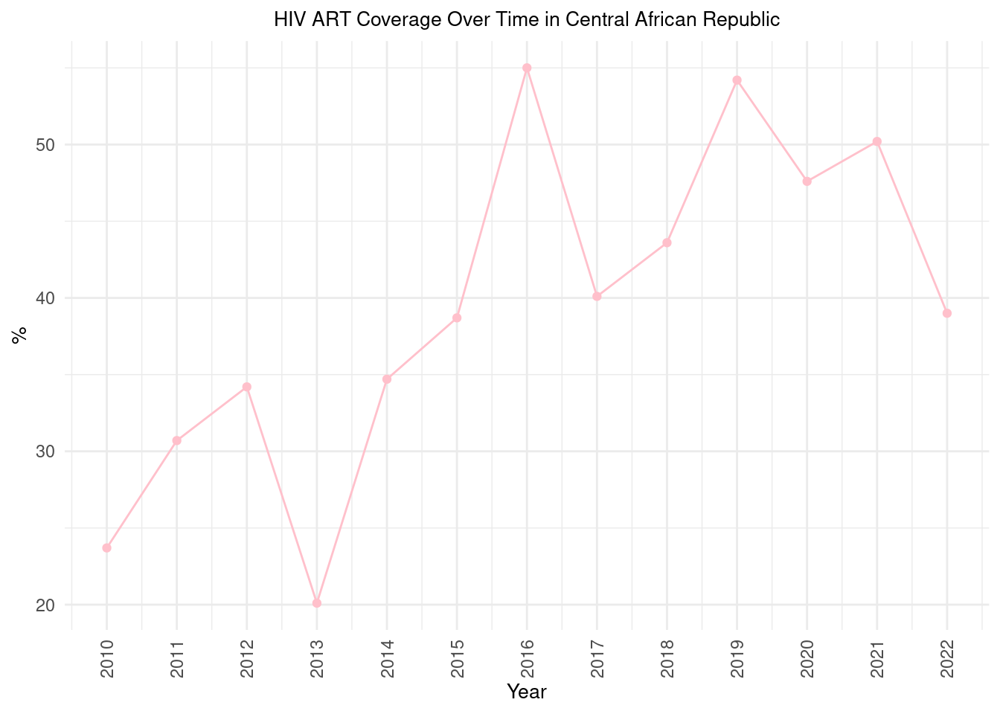
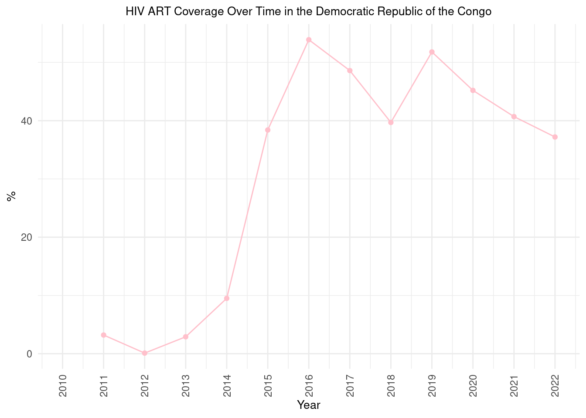

Exploring the Intersection of Life Expectancy and HIV Treatment Across Continents

This report utilizes a series of data-driven maps and graphs to portray a narrative of progress, disparities, and the ongoing challenges in public health.
Through comparative maps, we observe the substantial shifts in life expectancy between 1971 and 2021, highlighting countries that have made remarkable advances as well as regions where progress has been more elusive. The bar chart provides a focused snapshot of 2022, illustrating the percentage of pregnant women with HIV receiving antiretroviral therapy (ART) across select nations, revealing both strides and shortcomings in the global fight against HIV/AIDS.
Complementing these, scatter plots dissect the correlation between life expectancy and HIV treatment among women in 2021, offering insights into the multifaceted relationship between healthcare access and population longevity. Line graphs further enrich our understanding by tracking HIV ART coverage over time in specific countries, exemplifying the dynamic nature of public health outcomes.
These maps present a stark visual contrast of global life expectancy across five decades. The 1971 map shows lower life expectancies worldwide, with deeper shades representing longer lives concentrated in fewer regions. Fast forward to 2021, and the landscape has dramatically shifted—lighter shades proliferate, signifying the widespread increase in life spans attributed to advancements in medicine, healthcare policies, and living standards. However, the persistence of darker regions serves as a reminder that progress has been uneven and that some areas still face significant challenges in public health.


This graph illustrates the disparities in healthcare access across some of the poorest nations in Africa, with a focus on the provision of antiretroviral therapy (ART) to pregnant women living with HIV in 2022. T
Countries were selected based on the following factors:
| Country | GDP per Capita (USD) | Poverty Rate (%) | HDI (Human Development Index) |
|---|---|---|---|
| Niger | $510 | 41.4 | 0.394 |
| Cameroon | $1,394 | 37.5 | 0.556 |
| Senegal | $1,504 | 38.7 | 0.512 |
| Burkina Faso | $798 | 40.1 | 0.452 |
| Zimbabwe | $1,266 | 70.2 | 0.535 |
| Ghana | $2,202 | 23.4 | 0.611 |
| Ethiopia | $884 | 23.5 | 0.485 |
| Kenya | $1,749 | 36.8 | 0.602 |
| Zambia | $1,615 | 57.5 | 0.588 |
| United Republic of Tanzania | $1,089 | 49.1 | 0.529 |
| Mozambique | $532 | 46.1 | 0.456 |
| Botswana | $8,249 | 16.3 | 0.717 |
| Uganda | $826 | 21.4 | 0.542 |
The visualization underscores the challenges faced by women in these countries, revealing the efforts and progress made towards ensuring that pregnant women with HIV receive the necessary treatment to maintain their health and to prevent mother-to-child transmission of the virus.

This scatter plot compares the life expectancy of women with the percentage of pregnant women receiving antiretroviral therapy (ART) in some of the poorest countries in Africa, using data from 2021. Despite the unavailability of 2022 data, this 2021 snapshot provides crucial insights into the intersection of healthcare provision and its potential impact on life expectancy. The selected countries are determined to be the poorest based on their low GDP per capita, high rates of poverty, and limited healthcare resources. This visual analysis aims to explore correlations between improved access to HIV treatment and life expectancy, highlighting where progress is made and where further support is needed.

These line graphs present the trends in HIV ART coverage over a period of more than a decade (2010-2022) in two of the poorest countries in Africa: the Central African Republic and the Democratic Republic of the Congo. These nations were selected due to their low GDP per capita and the high prevalence of poverty, which pose significant challenges to their healthcare systems. The graphs depict the fluctuations in ART coverage among the population, reflecting various factors such as changes in health policy, funding, international aid, and socio-political stability. They highlight both the strides made in improving access to lifesaving treatments and the obstacles that persist in sustaining consistent healthcare delivery to those living with HIV.


In conclusion, this report highlights both the remarkable global progress in life expectancy and the challenges that remain in providing equitable HIV treatment. While many regions have seen significant improvements, disparities still exist, especially in economically challenged areas of Africa. The data emphasizes the need for continued international support, effective health policies, and stronger healthcare systems. To ensure health and longevity for all, it’s crucial to address the socioeconomic factors affecting healthcare access and to foster collaborative efforts towards sustainable improvement.